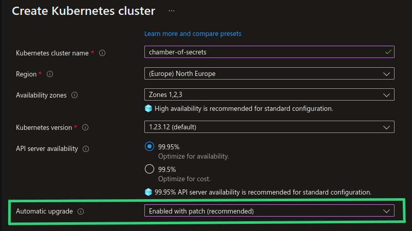
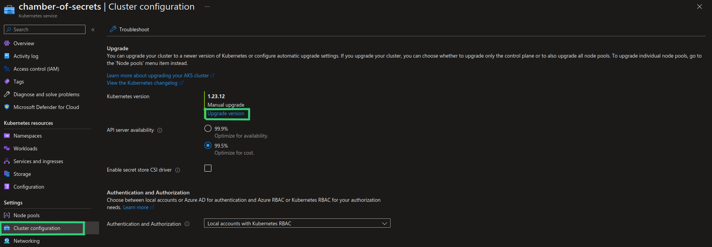
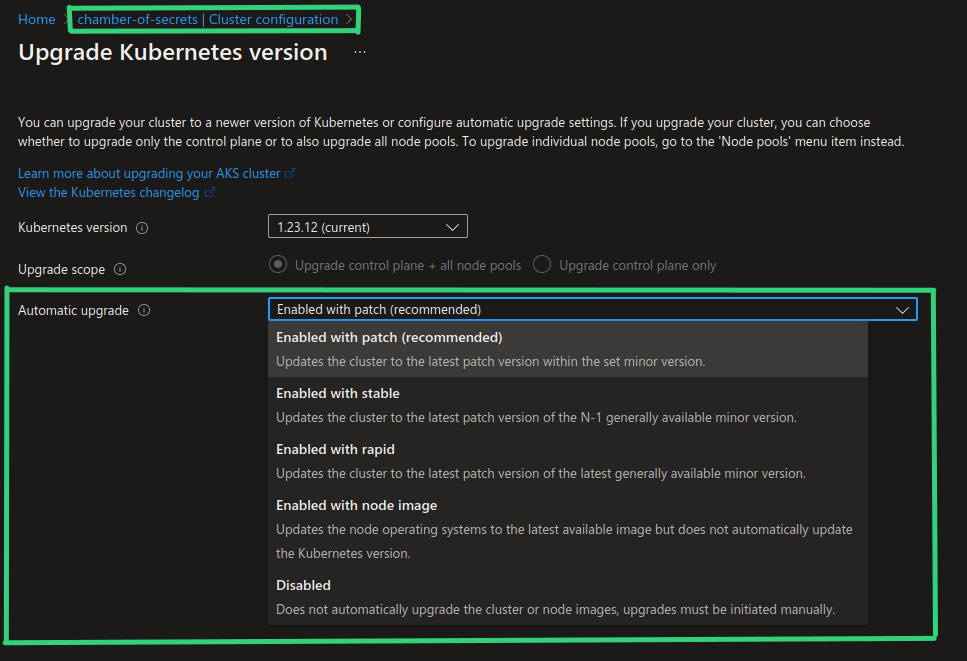
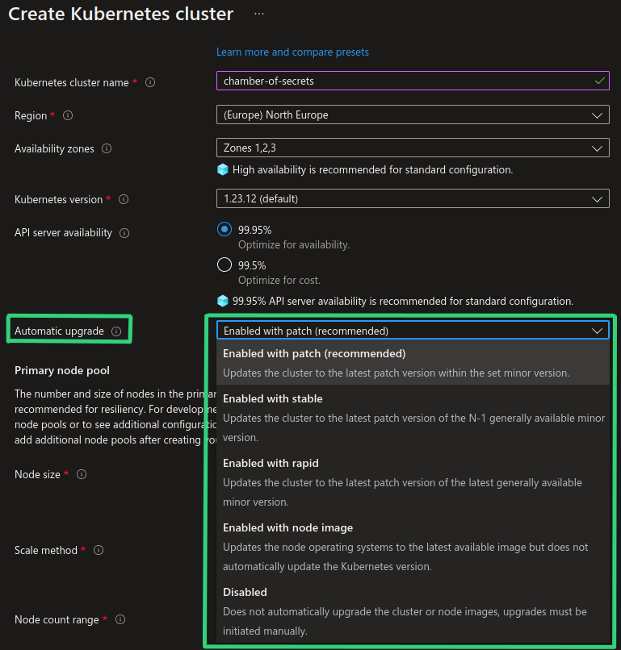
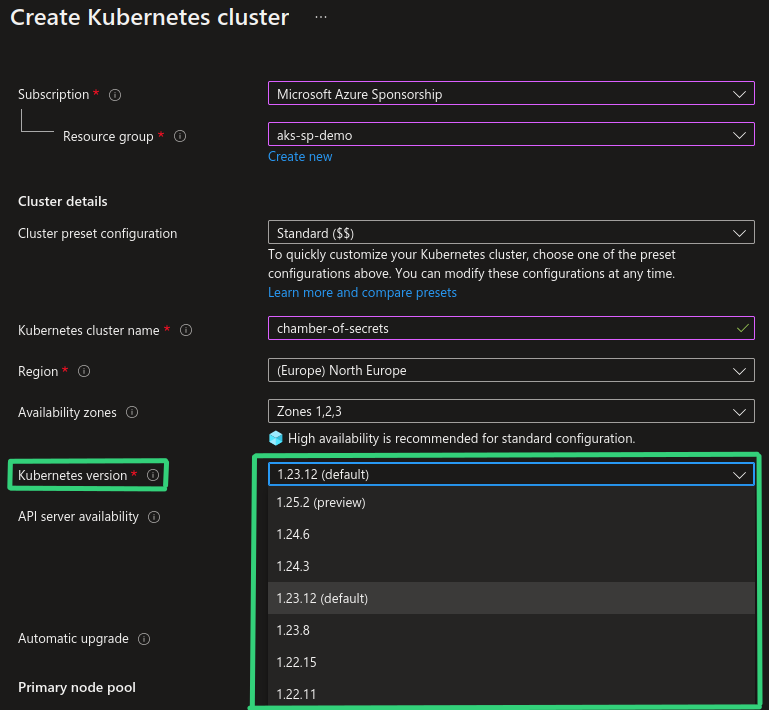

[🎄Azure Advent Calendar🎄] Exploring Upgrade Strategies in Azure Kubernetes Service
🎄This blog post is also a contribution to Azure Advent Calendar where during December, experts from the tech community share their knowledge through contributions of a specific technology in the Azure domain. You’re welcome to check out all the contributions here: Azure Advent Calendar
Have you already seen “Automatic upgrade” property when creating a new AKS cluster in Azure Portal?😺

Auto-upgrade of an AKS cluster is actually not a new functionality and has been available since January 2021. It is just recently it has been made configurable from the Azure Portal. You can enable auto-upgrade from the Azure Portal both when you create a new AKS cluster and by enabling it for existing AKS cluster through “Cluster configuration”, as shown in the screenshots below.


Before we dive into what auto-upgrade functionality can do for us let’s take a look at why we need to bother about upgrading AKS clusters, and why it’s important to do it frequently and continuously.🧐
Why upgrading AKS clusters is important?
I’ve seen quite a few misunderstandings and misconceptions related to the upgrade process for AKS clusters and Kubernetes clusters in general. Both when it comes to upgrading the cluster to a new Kubernetes version and upgrading a node image in order to get newest OS patches and fixes. I’ve seen multiple organizations running their workloads on clusters with Kubernetes version that was 2-4 versions older than the latest GA version.
Node image upgrade can be a confusing term which I would like to clarify. When I talk about node OS image upgrade in this blog post I mean upgrading the existing OS version that a Node runs on to latest patch version that was released by AKS for the same OS. For example, Ubuntu 18.04 node image upgrade from
AKSUbuntu-1804-2022.11.01toAKSUbuntu-1804-2022.11.12. Upgrading a node runningUbuntu 18.04toUbuntu 22.04will be a totally different story: upgrading the operating system version that a node or node pool runs on is tied to the Kubernetes version of the cluster. You will only be able to do that by upgrading the cluster to Kubernetes version that supports respective OS version. For example, if you want to upgrade toUbuntu 22.04you will need to upgrade AKS clusters to version1.25or newer.
SO, WHY CAN LACKING CLUSTER UPGRADE ROUTINE BECOME AN ISSUE?
SECURITY
Kubernetes clusters, just like any other technology, get affected by security vulnerabilities. During the last few years more and more threat actors have started targeting workloads running in Kubernetes clusters. 2022 has been the year with the highest amount of security vulnerabilities affecting Kubernetes according to the CVE count at CVE - Kubernetes. Nodes that applications are running on in Kubernetes, are basically VMs which must also be continuously patched and updated, just like regular virtual machines that you may be running elsewhere, for example on-premises. When a security vulnerability gets disclosed there may often be a workaround or a quick fix that can be applied to currently running resources, but in order to fully protect your clusters and workloads you would normally need to perform an upgrade in order to get the latest patches and security fixes in place.
DEPRECATIONS
Another important reason are new and deprecated features and components. By upgrading to newer Kubernetes versions you get access to new functionality that can help you run your workloads more securely, efficiently and sustainably on Kubernetes, which is always a plus.🌿 At the same time, by not upgrading to newer Kubernetes versions you may end up in a situation where you can’t scale out by creating more nodes or more clusters, because the version that you’re attempting to use is not supported anymore.
For example, if you’re running node pools on deprecated version and you would need to scale out, you will not be allowed to do that. You will be allowed to create a new node pool but on a newer, supported version, but then you may face incompatibility with Kubernetes control plane version. In that case you will need to upgrade the cluster to a newer Kubernetes version first in order to be able to scale out and create a new node pool. And that’s a nasty situation to be in when you really need to scale your application😅 Another risk may be third-party applications that take specific versions out of support while newer versions of the application may not necessarily be compatible with a legacy Kubernetes version. In that case you may not even be able to pull the desupported version of the applicaiton which, even though is a more rare scenario, may still happen (trust me, I’ve seen it😑).
SUPPORT POLICY
Last reason is related to support policy defined by cloud provider which is applicable if you’re using managed Kubernetes service. When it comes to managed Kubernetes service like AKS it’s important to understand what you’re responsible for in terms of keeping your AKS clusters and nodes upgraded:
-
AKS cluster and node upgrade to a new Kubernetes version: you’re responsible for upgrading your AKS clusters to newer Kubernetes versions. Kubernetes release frequency is approximately 3 times per year for minor version releases + quite frequent (monthly or even weekly) patch releases for fixing security vulnerabilities or bugs of significant severity. AKS normally has weekly releases with 2-week rollout window in order to make new changes available for all regions in a controlled and safe manner. A typical AKS release may include support for new Kubernetes versions, fixes, feature and component updates, including node OS image updates. In order to stay on a Kubernetes version that is officially supported by Microsoft, you must upgrade your AKS clusters at least once a year. If you’re running AKS clusters that have been out of support for more than 3 minor versions and it poses a security risk (for example, to Microsoft’s infrastructure which is shared among customers), Microsoft will first nicely ask you to upgrade your clusters. If you ignore the request, Microsoft will have no other choice than to upgrade the clusters on your behalf. YOU. HAVE. BEEN. WARNED. 😈
-
Linux and Windows Node OS image upgrade in order to get latest fixes and patches: you’re responsible for patching and upgrading operating system that your worker nodes (nodes where your applications are deployed) are running on. Node OS image upgrade for master nodes in AKS is handled by Microsoft so we only need to worry about upgrading worker nodes. Upgrade process is different for Linux and Windows nodes: updates for Linux nodes are released weekly or even daily and are applied to existing Linux nodes automatically, except for node reboot. You’re responsible to perform reboot to finalize the upgrade of Linux nodes. Updates for Windows nodes are released as a new Windows image on a monthly basis which means that Windows updates are not applied to Windows nodes automatically - you’re responsible for upgrading Windows nodes to the newest Windows image which also includes latest patches. If you don’t have a routine for upgrading node OS image manually or automatically, you may end up running your applications on unpatched and potentially vulnerable nodes! And you don’t want that.📛
Overall conclusion is that there are many strong arguments for why you should keep your clusters updated. With a good routine in place upgrade process can be like a walk in the park (almost). You can read more about AKS support and upgrade policies in the links that are provided in “Additional resources” section below.
Now let’s take a look at how cluster upgrade process looks like and how you can automate it.😼
Cluster and Node OS image upgrade process
I will not go into all the details of AKS cluster and node OS image upgrade - it’s well-documented in official Microsoft documentation, links to which you can find in the end of this blog post.😺
Instead I would like to illustrate the upgrade process and mention a few highlights that you need to be aware of.
There are 3 important pieces that you need to decide upon when establishing cluster and node upgrade routine:
-
Pod Disruption Budgets. It is important that all the applications running in Kubernetes clusters are configured with Pod Disruption Budgets (PDB). PDB ensures that a specific amount of application replicas are available during voluntary/planned disruptions like planned maintenance. PDB provides you with a capability to perform zero downtime upgrades. I will point out that PDBs should be configured so that at least 1 Pod can be drained - if it’s configured with unevictable Pods, a Node drain operation hangs and never gets to complete. You can read more about Pod Disruption Budgets here: Pod disruption budgets
-
Node surge value. Node surge defines how many worker nodes can be take offline at the same time for upgrade. Default value is 1 Node but it is configurable with a
--max-surgesetting. Recommendation from Microsoft is to define--max-surgesetting no larger than33%for production clusters. You can read more about node surge here: Customize node surge upgrade -
Maintenance window. You can enable Planned Maintenance functionality (In Preview at the point of writing this blog post) to secure that upgrades are performed during the time range that works best for you in terms of minimizing planned and unplanned disruption. This may be beneficial, especially when auto-upgrade is enabled. You can read more about it here: Use Planned Maintenance to schedule maintenance windows for your Azure Kubernetes Service (AKS) cluster (preview)
AKS cluster upgrade flow
Now, let’s take a look at a concrete example: in the animation below I’ve visualized an AKS cluster upgrade flow. We have an AKS cluster with 2 nodes which will be upgraded to a new Kubernetes version with latest node OS image. Node surge value is set to default where only 1 Node at a time will be taken down for upgrade.
There are 2 applications in the game:
- DeerCat application with 8 replicas spread across existing 2 nodes. DeerCat application has PDB defined where at least 6 out of 8 Pods must be available.
- BlackHatCat application with 2 replicas, which will be deployed to the same AKS cluster while the upgrade process is ongoing.
The upgrade will happen as follows:
- Create buffer node (Node 3) with the chosen, new Kubernetes version and latest node OS image.
- Choose Node 1 to upgrade.
- Prohibit scheduling of new deployments (cordon) to Node 1.
- Empty Node 1 (drain) by re-creating all Pods on other available Nodes, including the buffer node. The amount of application Pods to be killed and re-created simultaneously is defined by Pod Disruption Budgets.
- Upgrade Node 1 to new Kubernetes version and Node OS image. Allow scheduling of new deployments (uncordon) to Node 1 once upgrade completed successfully.
- Node 1 becomes buffer node for Node 2.
- Choose Node 2 to upgrade. Perform step 3-5 for Node 2.
- Node 2 becomes buffer node.
- No subsequent nodes to upgrade. Drain and remove lastly tagged buffer node (Node 2). Repeat step 3-4 for Node 2.
- Delete Node 2. AKS cluster upgrade complete!
I hope that you liked my festive visualization of the upgrade process.😻

As I mentioned earlier, you can perform the upgrade manually, in a controlled manner, but you can also configure it to happen automatically whenever a new Kubernetes version or node image becomes available - let’s dig into how we can do that in the next section! 👀
AKS Auto-upgrade
It is possible to configure automatic upgrade of AKS clusters to GA versions of Kubernetes, based on the chosen auto-upgrade channel.
There are currently 5 auto-upgrade channels available:

Let’s say we have an AKS cluster on version 1.23.12 and we have currently these Kubernetes versions available:

If we take into consideration all the available Kubernetes versions in the screenshot above, each auto-upgrade channel will work as follows:
Please note that Kubernetes versioning scheme follows standard semantic versioning rules, i.e. for version
1.23.12->1(Major).23(Minor).12(Patch)
- Patch : will automatically upgrade to the newest patch of the currently used Kubernetes version. In our example there are no new patch versions available for version
1.23but if version1.23.13is released, AKS cluster will be upgraded to version1.23.13automatically. - Stable : will automatically upgrade to the latest patch of
[LATEST_MINOR_VERSION] - 1, i.e. the minor version right before newest minor version. So in our example above, since preview versions are NOT supported by auto-upgrade, our AKS cluster on version1.23.12will not be upgraded just yet but once version1.25.2becomes GA, AKS cluster will be automatically upgraded to version1.24.6which is the version with the newest patch and minor version right below newest GA minor version. - Rapid : will automatically upgrade to the latest patch of the latest GA minor version that is currently available. If current cluster version is 2 minor versions behind the latest, upgrade will happen in 2 stages: first, upgrade to latest patch of
[LATEST_MINOR_VERSION] - 1, then upgrade to latest patch of latest minor version. So in our example above, since preview versions are NOT supported by auto-upgrade, our AKS cluster on version1.23.12will not be upgraded just yet, but once version1.25.2becomes GA, AKS cluster will first be upgraded to version1.24.6and then upgraded to version1.25.2which will be the newest GA minor version with the newest patch. - Node image: will automatically upgrade node OS images once new versions become available. This channel can be useful in order to automatically get latest fixes and patches for the Linux and Windows nodes that your applications run on in the AKS cluster. For example, if your Linux nodes are running on version
AKSUbuntu-1804-2022.11.01and versionAKSUbuntu-1804-2022.11.12becomes available, Linux nodes will be automatically upgraded to use this new version. - None/Disabled : auto-upgrade functionality is disabled and you must upgrade your AKS clusters and node images manually.
Even though patch auto-upgrade channel is set as default and recommended when you create an AKS cluster from Azure Portal, it is not the same when you provision AKS cluster with IaC or Azure CLI. All provisioning methods, except for creation through Azure Portal, have auto-upgrade disabled by default and you will need to explicitly enable it if you want to start using it.
Enabling AKS auto-upgrade in IaC
You can enable auto-upgrade for AKS clusters with:
Azure CLI
--auto-upgrade-channel <UPGRADE_CHANNEL_NAME> property of az aks create command can be used to enable auto-upgrade.
For example, az aks create --name chamber-of-secrets --resource-group hogwarts-rg --auto-upgrade-channel patch
Terraform
automatic_channel_upgrade = <UPGRADE_CHANNEL_NAME> argument can be used to enable auto-upgrade.
For example:
resource "azurerm_kubernetes_cluster" "aks_cluster" {
location = "norwayeast"
name = "chamber-of-secrets"
resource_group_name = "hogwarts-rg"
automatic_channel_upgrade = "patch"
default_node_pool {
name = "agentpool"
vm_size = "Standard_B2s"
}
}
Bicep
autoUpgradeProfile.upgradeChannel setting can be used to enable auto-upgrade.
For example:
resource aks_cluster 'Microsoft.ContainerService/managedClusters@2022-05-02-preview' = {
name: 'chamber-of-secrets'
location: 'norwayeast'
properties: {
agentPoolProfiles: [
{
name: 'agentpool'
count: 1
vmSize: 'Standard_B2s'
osType: 'Linux'
mode: 'System'
}
]
autoUpgradeProfile: {
upgradeChannel: 'patch'
}
}
}
You can learn more about auto-upgrade support for AKS here: Automatically upgrade an Azure Kubernetes Service (AKS) cluster
Auto-upgrade considerations
Finally, based on my own experience with upgrading AKS clusters, I would like to mention a few things that you should consider when choosing an upgrade strategy.🤔
Application container size, warmup time and complexity
There may be different use cases in terms of what applications organizations choose to run and host on Kubernetes. In case you have a heavier application, an application that requires additional warmup time or a more complex, stateful application, you will need to thoroughly test and evaluate if you can enable auto-upgrade and still preserve the same level of availability and confidence in your systems after the upgrade. Having auto-upgrade enabled in development environments for some time is definitely a good idea before you enable it in production.
When it comes to cluster upgrades another popular strategy is blue-green deployment where you spin up a cluster on a newer Kubernetes version and gradually migrate all workloads from the old cluster to the new cluster. This process can be automated and can be chosen due to high level of criticality and/or complexity of the workloads. It’s important that you evaluate all of the possibilities and choose the one that works best for your specific use case.
Kubernetes API Deprecations
Quite many Kubernetes releases may include APIs that are deprecated and/or removed as part of the release. If you enable auto-upgrade and don’t proactively monitor Kubernetes API removals, you may end up in a situation where deployment of resources that use removed APIs will fail during the upgrade process. There are tools that can help you scan Kubernetes deployment templates and alert you in case a fix is needed. One of the tools that has worked really great for me is Pluto - you can check out one of my earlier blog posts on how to use it: Monitoring Kubernetes API Deprecations With Pluto. If you go ahead with automatic upgrade of AKS clusters I would really recommend to have a proper routine on monitoring and continuously fixing potential Kubernetes API deprecations and removals.
Upgrade only specific node pools
As mentioned above you can choose to only upgrade Kubernetes node images in order to receive latest fixes, patches and OS updates. In this case cluster will not be upgraded to newer Kubernetes version. node-image auto-upgrade channel will automatically upgrade all the nodes in an AKS cluste. If you want to only upgrade a specific node pool you can’t configure it as part of auto-upgrade channel functionality. An alternative in this case can be to either upgrade node pools manually or to create a workflow that can do it for you, also on a schedule. --node-image-only property of az aks nodepool upgrade command lets you only upgrade node image in a specific node pool. An example of how to do it with GitHub Actions is provided in Microsoft documentation: Apply security updates to Azure Kubernetes Service (AKS) nodes automatically using GitHub Actions. The same task can be easily converted to Azure Pipelines if you want to use it in Azure DevOps instead. kured is also a very popular tool for rebooting Linux nodes to complete installation of updates - with label selectors you can limit which nodes shouldn’t be rebooted by kured based on what Pods are running on those nodes. You can read more about using kured for Linux nodes in AKS here: Apply security and kernel updates to Linux nodes in Azure Kubernetes Service (AKS)
Maintenance window
By default maintenance work on AKS clusters can happen at any time. In order to get more control of this process you can enable weekly maintenance windows which define the time periods that you want this maintenance work to happen at. Maintenance windows can be enabled with help of Planned Maintenance functionality that is currently in preview for AKS: Use Planned Maintenance to schedule maintenance windows for your Azure Kubernetes Service (AKS) cluster (preview).
Please note that even with maintenance windows enabled the execution will happen on best effort basis which means that in some cases, like urgent security fixes or critical bugs, Microsoft can break the defined window and perfom updates outside of maintenance windows.
In conclusion I think that auto-upgrade functionality for AKS is a really useful feature that can make the whole upgrade process more agile, as well as make it easier for organizations to keep their clusters up-to-date, especially when it comes to the important security fixes. Nevertheless, before you enable auto-upgrade in production clusters, I would recommend to use this feature for some time in development and testing environments first, in order to verify that your workloads are still at the same level of stability and availability as you want them to be.
Additional resources
Below you may find a few resources to learn more about auto-upgrading AKS clusters and about the cluster and node image upgrade process in general:
- Official Microsoft documentation for auto-upgrade support in AKS: Automatically upgrade an Azure Kubernetes Service (AKS) cluster
- Support policies for AKS article provides details about technical support policies and limitations for Azure Kubernetes Service (AKS), as well as who is responsible for which areas of AKS. Support policies for Azure Kubernetes Service
- Kubernetes version support policy for AKS: Supported Kubernetes versions in Azure Kubernetes Service (AKS)
- Official Microsoft documentation for AKS cluster upgrade process: Upgrade an Azure Kubernetes Service (AKS) cluster
- Official Microsoft documentation for AKS node image upgrade process:Azure Kubernetes Service (AKS) node image upgrade and applying Linux node updates that require reboot: Apply security and kernel updates to Linux nodes in Azure Kubernetes Service (AKS)
- Official Microsoft documentation for AKS Planned Maintenance support (currently in preview): Use Planned Maintenance to chedule maintenance windows for your Azure Kubernetes Service (AKS) cluster (preview)
That's it from me this time, thanks for checking in!💖
If this article was helpful, I'd love to hear about it! You can reach out to me on LinkedIn, Twitter, GitHub or by using the contact form on this page.😺
Stay secure, stay safe.
Till we connect again!😻